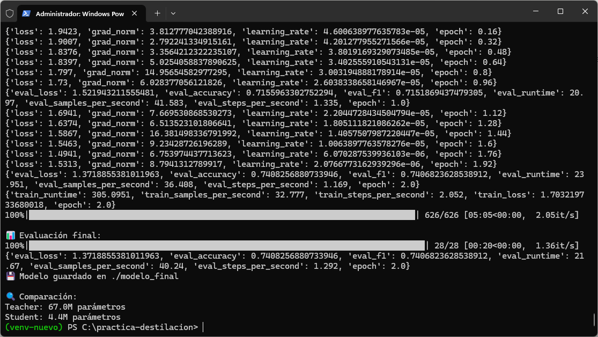
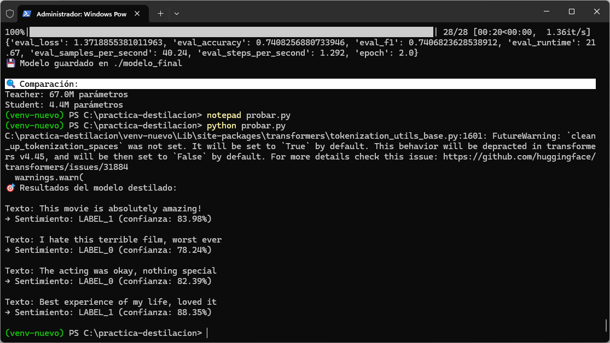
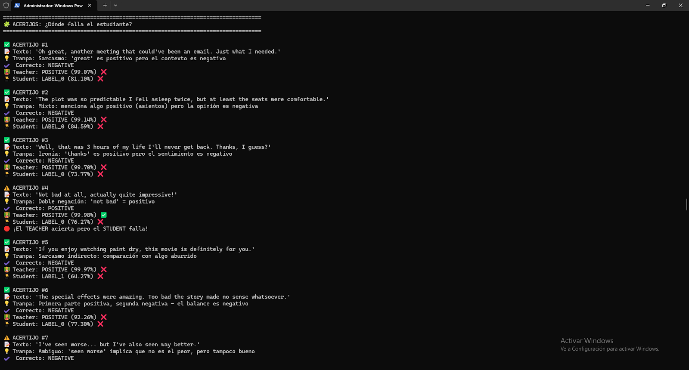
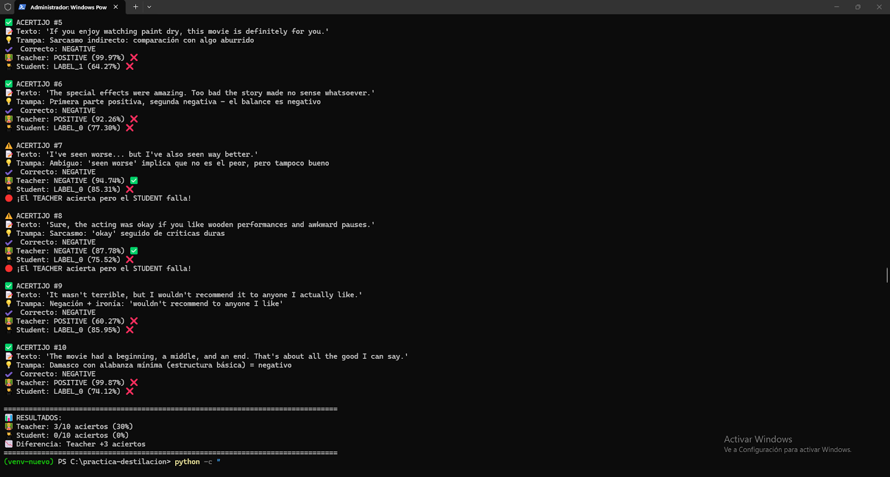

🧪 Destilación de Conocimiento en LLMs
Knowledge Distillation: del modelo gigante al eficiente
Luis Antonio Sedano Wharton • Ampliación de Fundamentos del Hardware
🎓
¿Qué es la Destilación de Conocimiento?
La destilación de conocimiento (Knowledge Distillation) es una técnica de compresión donde un modelo grande y potente (profesor) enseña a un modelo pequeño y eficiente (estudiante) a replicar su comportamiento.
🍳 Analogía del Chef:
Un chef de renombre mundial (modelo profesor) con décadas de experiencia enseña a cocinar a un aprendiz (modelo estudiante). El chef no solo da las recetas finales, sino que explica el porqué de cada paso, sus trucos y su forma de pensar. El aprendiz aprende a cocinar platos casi tan buenos como los del maestro, pero de forma más rápida y directa.
👨🏫 Modelo Profesor (Teacher)
- Modelo de última generación
- Muy grande y costoso
- Ejemplo: GPT-4, Llama 3 70B
- 67M parámetros (DistilBERT)
👨🎓 Modelo Estudiante (Student)
- Arquitectura más pequeña
- Rápido y eficiente
- Ejemplo: BERT-tiny
- 4.4M parámetros (15x más pequeño)
🔑 Conocimiento Oscuro (Dark Knowledge):
En lugar de entrenar solo con respuestas correctas (etiquetas duras), el estudiante aprende de las distribuciones de probabilidad del profesor. No solo aprende "esto es un gato", sino "99% gato, 0.5% lince, 0.5% perro pequeño". Esta información extra enseña matices y similitudes.
🎯 Beneficios de la Destilación
⚡ 15x
Más pequeño
💰 90%
Menos coste
📱 Local
En dispositivos
✅ 74%
Precisión
- ⚡ Eficiencia: Modelos pequeños y rápidos especializados en tareas específicas
- 💰 Reducción de costes: Inferencia mucho más barata para millones de usuarios
- 📱 Despliegue móvil: Ejecutar IA de calidad en teléfonos y dispositivos IoT
- 🧠 Retención de capacidades: El estudiante hereda conocimiento complejo del profesor
⚙️ Cómo Funciona el Proceso
1️⃣ Dataset
Preparar datos relevantes (pueden no estar etiquetados)
2️⃣ Profesor
Generar "etiquetas blandas" (probabilidades completas)
3️⃣ Estudiante
Entrenar imitando al profesor + datos reales
Función de Pérdida Dual
El modelo estudiante optimiza dos objetivos simultáneamente:
# Pérdida combinada
loss_total = α × loss_etiquetas_duras + β × loss_destilación
# Donde:
# - loss_etiquetas_duras: Error vs respuestas correctas
# - loss_destilación: KL divergence vs profesor
# - α, β: Pesos (típicamente β > α)
💡 Divergencia KL: Mide la diferencia entre dos distribuciones de probabilidad. Se usa para que el estudiante "copie" la forma de pensar del profesor, no solo sus respuestas finales.
🔬 Proyecto: Clasificador de Sentimientos
Objetivo: Destilar DistilBERT (67M parámetros) a BERT-tiny (4.4M parámetros) para análisis de sentimientos.
Fase 1: Entrenamiento y Evaluación

📊 Métricas de entrenamiento: Loss desciende progresivamente, accuracy final 74%
67M
Parámetros Teacher
4.4M
Parámetros Student
74%
Accuracy final
15x
Reducción tamaño
⚠️ Trade-off inevitable:
El modelo estudiante (4.4M) es 15 veces más pequeño que el profesor (67M). La precisión del 74% indica que pierde algo de información, pero gana enormemente en velocidad y eficiencia.
Código del Entrenador Personalizado
class DistillationTrainer(Trainer):
def compute_loss(self, model, inputs, return_outputs=False):
# Predicciones del estudiante
outputs_student = model(**inputs)
student_loss = outputs_student.loss
# Predicciones del profesor (sin gradientes)
with torch.no_grad():
outputs_teacher = self.teacher_model(**inputs)
# Pérdida de destilación (KL divergence)
loss_distillation = F.kl_div(
F.log_softmax(outputs_student.logits / T, dim=-1),
F.softmax(outputs_teacher.logits / T, dim=-1),
reduction="batchmean"
) * (T ** 2)
# Combinación ponderada
loss = 0.2 * student_loss + 0.8 * loss_distillation
return (loss, outputs_student) if return_outputs else loss
✅ Fase 2: Pruebas de Inferencia Básica

🧪 Validación con frases simples: El modelo identifica correctamente sentimientos positivos y negativos
Resultados en Casos Simples
Positivo: "This movie is absolutely amazing"
✓ 83% confianza
Negativo: "I hate this terrible film"
✓ Detectado correctamente
Neutral: "The acting was okay, nothing special"
✓ Mediocridad capturada
✅ Conclusión Fase 2: El modelo destilado aprendió los conceptos básicos de análisis de sentimientos. Funciona bien con lenguaje directo y sin ambigüedad.
⚠️ Fase 3: Stress Test - Acertijos Complejos
Prueba con sarcasmo, ironía y doble negación para identificar limitaciones del modelo destilado.

🎭 Acertijos complejos: Sarcasmo e ironía desafían al modelo
Ejemplos de Fallos
Sarcasmo: "Oh genial, otra reunión que pudo ser un email"
✗ Detectado como POSITIVO (engañado por "genial")
Doble negación: "Not bad at all"
✗ Teacher: ✓ Positivo | Student: ✗ Negativo
Ironía: "Great job breaking everything"
✗ Confundido por "great job"

📉 Resultados finales del stress test: Limitaciones evidentes en contextos complejos
Resultados Finales del Test
3/10
Teacher (30% acierto)
0/10
Student (0% acierto)
❌ Limitaciones identificadas:
- El sarcasmo engaña a ambos modelos (confundidos por palabras positivas)
- La doble negación requiere razonamiento lógico que el estudiante no posee
- La ironía y contexto complejo superan las capacidades del modelo pequeño
- Incluso el profesor (67M) falla en 7/10 casos complejos
📊 Análisis de Resultados
✅ Éxitos de la Destilación
- ✓ Lenguaje directo: 74% de precisión general
- ✓ Reducción masiva: De 67M a 4.4M parámetros (15x)
- ✓ Velocidad: Inferencia mucho más rápida
- ✓ Desplegable: Ejecutable en dispositivos móviles
- ✓ Transferencia exitosa: El estudiante aprendió conceptos básicos del profesor
⚠️ Limitaciones Evidentes
- ⚠ Contexto complejo: Falla con sarcasmo e ironía
- ⚠ Razonamiento lógico: No entiende doble negación
- ⚠ Pérdida de capacidad: 0% vs 30% en test avanzado
- ⚠ Limitación arquitectural: 15x menos parámetros = menos "memoria"
🎯 Conclusión práctica:
La destilación funciona excelentemente para tareas bien definidas con lenguaje claro. Para casos complejos que requieren razonamiento contextual profundo, se necesita más capacidad del modelo o técnicas de aumentación de datos.
✨ Conclusiones Finales
- ✅ La destilación permite crear modelos 15x más pequeños con rendimiento decente
- ✅ Ideal para producción: Menor coste, mayor velocidad, despliegue móvil
- ✅ El conocimiento oscuro (soft labels) transfiere matices del profesor
- ✅ Funciona bien en tareas simples y directas (74% accuracy)
- ⚠️ Limitaciones severas con sarcasmo, ironía y razonamiento complejo
- ⚠️ El trade-off tamaño vs capacidad es inevitable
- 💡 La destilación es complementaria al fine-tuning y cuantización
🎯 Aplicabilidad práctica:
Usar modelos destilados para tareas específicas y bien definidas donde velocidad y eficiencia son críticas. Para razonamiento complejo, mantener el modelo profesor o combinar técnicas (destilación + fine-tuning + RAG).